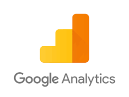

Discover my skills
Basic Analytical skills
Excel

VBA, Crossed Dynamic Tables, Index/equiv function, all of these are no longer a secret to me.
Since I discovered its power, I use it every day for my personnal projects. I even used it last christmas for our traditional non-secret santa draw, dealing with many conditions (last year's draw, parents/child, brotherhood, etc...)
I enjoy every little challenges on Excel: when you don't know how to do something but you try different things, search online for similar problems/solutions, and finally find you answer, it is very rewarding because you both learnt something and got an answer.
Google Analytics

Google Analytics is a free online service which enables you to measure your advertising ROI and track your online visibility.
I use it to gather several information on my websites' audience: New and returning visitors, Bounce rate, Conversion rate, Average Page Load Time and Bounce rate per browser. Those indicators allow me to answer the following questions: How often do users return to my website? Are the visitors' requirements met? Is my conversion funnel well designed? Is there any problem with the loading time and is there a specific problem on a specific browser?
Google Analytics helps me understand where do have friction points and how I can improve the overall experience.
Coding skills
HTML/CSS3

Thanks to the two hours Web Development module of Le Wagon, I know how to code simple and responsive website such as this one.
This portfolio is my first project using HTML/CSS3. After the course, I wanted to go further and I decided to create this website to test my new skills. It may not be perfect, but at least, I learnt a lot doing it!
Discover more here!SQL

SQL is one of the basic database management language for relational databases, and therefore it is highly recommended for data analytics. I have used it several times for queries and datasets joins but I don't have any concrete project to show you (yet!). However, these certifications from DataCamp will attest that I am already at ease with the tool!
Check certificationsR

R! Such a nice language! R was the first coding language that I learnt. So far, I have only used it to create an App with Shiny. It was my first coding project and I am quite proud of it!
Discover my first ShinyappPython

For basic query or for advanced machine learning python is an amazing tool that I highly recommend for beginners.
I am comfortable with pandas, numpy, seaborn, scikitlearn, etc. and so far, I have used python for machine learning projects and for marketing analytics.
Discover my projects using PythonData Visualisation Tools
Tableau

From basic 'drag-&-drop' use to advance charts creation, Tableau is my favorite tool for Data Vizualisation. I have used it to create interactive dashboard at school but also for personnal projects.
You can check them out:
Here!Power Bi

Since PowerBi is very popular, it was also part of our data visualization module, and we made a similar project on both Tableau and PowerBi to compare their accessibility.
Check the projectMachine Learning Tool
If Python remains my favorite Machine learning tool, I discovered Dataiku and IBM Watson Assistant recently and I have to admit they can help you save a lot of time!
Dataiku

Dataiku is a powerful collaborative platform which enables you to deal with data at each single step (cleaning, prediction, deployment, etc.). I have made several projects using Dataiku to discover the tool, and I chose to present one of them in this portfolio.
Dataiku's projectIBM Watson Assistant

I mainly used Watson in class where we created both a Chatbot and a translation assistant. You can see my Chatbot by clicking on the following link. It deals with simple Coffee related questions:
Coffee-Bot